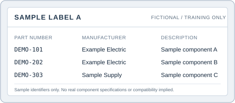

Customer records, authentication, notes, and request management. This page uses synthetic records only. Live calls, messages, email, and calendar connections are not active.
Panel scanning & parts review
From panel details to a usable parts list.
Bring part numbers, manufacturers, and descriptions into a table you can check, correct, and export.
The demo uses a fictional label and prepared rows. No live OCR runs on this page. Part identification, compatibility, and electrical specifications require contractor verification.
Interactive product demonstration
Try the two workflows.
Use sample data to explore customer requests and a reviewed parts list. Changes last until this page reloads.
Inside PanelReply
A workspace that keeps you moving.
Switch products. Review the details. Try the actions yourself.
Sample contractor/Customer requests
Demo workspace
Intake / Overview
Customer requests
The details you need for the next conversation.
Total requests3In this sample workspace
Awaiting review2Requests with New status
In review1Review the details first
Request3 shown
⌕
No matching requests
Try another job, name, or ZIP. You can also clear the status filter.
Add a sample request+
Use fictional job details only. We assign a sample customer name. This page does not collect contact information.
Panel scanning / Sample project
Panel parts review
Check the source. Correct the details. Export your list.
Sample project
Guided sample
See how a label becomes a list for review.
01 / SourceFictional label

02 / Prepared example
The label is a starting point.
Correct any field below. Mark each row reviewed only after you have checked its details.
Prepared sample rows. No live OCR, image upload, or project storage on this page.
0 of 3 rows reviewed
03 / Review & edit
Review & edit components 3
Edit values directly. Changes return a reviewed row to Unreviewed. Unknown details can stay blank.
Fictional sample components. Review status does not verify electrical compatibility.
Part number
Manufacturer
Description
Qty
Review status
Remove row
▦
Your sample list is empty
Add a row to enter a component, or reset the sample.
04 / CSV export
Your corrections and review status are included.
This interactive demo uses synthetic data and keeps changes only until reload. It sends no requests, messages, or files. Sample components do not establish electrical specifications or compatibility.
One platform. Two workflows.
Built around contractor work.
Give requests a place. Give parts a structure.
Customer intake
Every request. A clear next step.
Keep job details, callback preferences, status, and notes together so you can review the work before following up.
A customer request or a panel label. Bring the details into the right work area.
02
Make the details usable
Check the request, correct the fields, and keep uncertainty visible.
03
Choose the next action
Plan a follow-up or export your reviewed list. The decision stays with you.
Product overview
See what works. Know what comes next.
Explore the sample workflows here. The private application and any future connections have separate access and release steps.
WorkflowIn this previewProduct boundary
Customer requests
Sample records, search, status filters, notes, and a request form.
Existing private workspace manages authenticated records. No live customer intake in this preview.
Panel parts review
Fictional source label, editable values, per-row review, and CSV download.
Sample rows are prepared. This page does not extract text from an image.
Saved projects
Edits remain in this page until reload.
Account storage belongs in the private workspace. This preview does not save projects.
Calls & appointments
Callback and requested-date preferences are labels for review.
Calling, messaging, email, and calendar connections are not active.
The details
Keep the workflow clear.
Does a request book an appointment?
No. A preferred callback window or requested work date is information for the contractor. An appointment requires a separate agreement.
Does the sample read an uploaded image?
No. The label and parts rows are prepared examples. You can review, edit, and export the sample. No live OCR runs on this page.
Can I enter real customer information?
Use fictional data only. This development preview is for trying the interface. The private application handles authenticated request records separately.
What does Reviewed mean for a part?
It records that you checked the row in this demo. It does not verify the component, rating, suitability, or compatibility. Editing the row clears that review status.
What happens to my changes?
They stay in memory until you reload or reset this page. A downloaded CSV contains the current part values and each row’s review status.
Pricing
A practical tool. A clear offer, when ready.
Pricing has not been set. The product is in development, and this preview does not offer a subscription or checkout.
Placeholder — requires review before publication or customer use.
This page is not a published privacy policy. The product’s data handling, retention, and responsibilities must be documented and reviewed before a public release.
What this sample preview does
The interactive sample uses page memory. It does not send form entries or images. Reloading or resetting clears your sample edits. A CSV download saves the values you choose to export on your device.
What the product policy needs to cover
Account details and business request records
Uploaded images and extracted component information
Retention, deletion, backup, and export processes
Service providers and any approved future integrations
Business responsibilities, customer choices, and a contact route
Placeholder — requires review before publication or customer use.
This page is not an approved agreement. Service scope, responsibilities, and commercial terms need review before subscriptions or a public pilot open.
Current demonstration scope
The preview illustrates customer-request and parts-review workflows with synthetic data. It does not dispatch work, confirm appointments, or establish electrical component specifications.
What the agreement needs to cover
Permitted use and account responsibilities
Review of extracted information and contractor decisions
Service availability, support, and product limitations